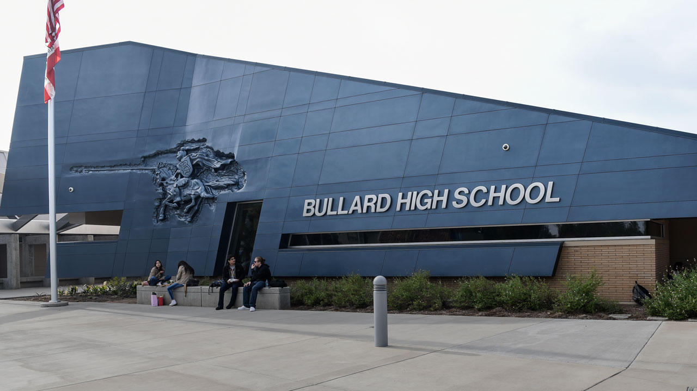

What the principal already knew
This is not a mystery novel. It is a paper trail. When Trustee Thomas walked into a Bullard staff meeting on May 6, 2022 and accused “white” coaches of using the N-word on campus, the school already had a roster. Her middle son was not on it. He never attended Bullard. He never played for Don Arax.
Three weeks later she emailed Principal Armen Torigian a new scene: Arax supposedly “trash talking” a different child in the hallway. Torigian checked. Arax was in his office with Boise State recruiters. He was not in the hall. Torigian told her she was off base. That correction is in the 2022 claim file, not in a 2026 epiphany.
So when she sat down on GV Wire on May 17, 2022 and named Arax as the man who called her son the slur, the building administrator who would later be deposed already had independent reason to treat the story as false. The circulating deposition still is the public reminder of that sequence. The texts introduced from Torigian’s March 31, 2026 deposition show what happened the night of the podcast: Arax told the principal he was going to sue. Torigian told him to go after her.
That is not “he-said-she-said.” That is a principal who already ran the clock on one of her follow-up claims, already knew the middle son was not a Bullard player, and still watched a trustee put the most radioactive word in American English into a coach’s mouth on a recorded show.
Loaded labels are not a public-safety tool
A racial slur allegation against a high-school coach is not a vibe. It is an accusation that ends careers, empties stands, and teaches every Black kid in the building that the adult in charge of the field is a predator. If it is true, it belongs in a personnel file and a courtroom. If it is false, it is itself a form of harm — to the named man, to the students who now have to sort rumor from record, and to every later claim of actual racism that has to fight the smell of a hoax.
Thomas used the label on a podcast while answering a separate controversy: a Bullard weight-room photo some read as a Klan hood and others read as an American Ninja Warrior gag. She did not need Arax’s name to condemn a photo. She put his name in anyway. In 2025, under oath, she tried to unsay it: “I never said he called my son the N-word.” The tape exists. A judge kept her in the case for that contradiction.
In August 2026 her son’s declaration and a later media statement collided with each other. One sworn paper says he never told her Arax used a slur against him. A press statement says he told her a version he now calls untrue. Either way, the original public sentence — Arax calling her son the word — is dead. She issued an apology. She refused to resign. “I will not resign for acknowledging the truth,” she wrote, after four years of not acknowledging it while the meter ran.

The seat swap
Watch the chairs, not the press releases. Miguel Arias is termed out of Fresno City Council District 3 — Tower, downtown, southwest. He filed for Fresno Unified Trustee Area 1, the Edison-region seat Thomas is leaving. Thomas filed for Arias’s District 3 council seat and advanced to the November runoff against Assemblymember Joaquin Arambula.
That is the swap. Same ecosystem. School board to council, council to school board. The people who vote the legal-defense checks and the people who want the next dais are not strangers. District 3 is not a finishing school for unfinished school-board fights. It is where street lighting, police response, encampments, and campus safety actually land on a neighborhood.
A trustee who spent years defending a false slur as if it were moral courage is now asking Tower District voters to hand her a city vote. The councilmember leaving that seat is asking school-district voters to hand him hers. If you think that is coincidence, you are not watching Fresno.
Who pays when speech is a weapon
Through June 9, 2026, Fresno Unified reported $235,330 on its own defense and $134,421 on Thomas’s. Call it $370,000 before trial, before experts, before a December 7 trial date that may or may not settle in mediation. The district has said it will not indemnify a judgment against her. The teachers’ union called for her resignation because the money is classroom money. She declined.
That is the public-safety point, stripped of theater. Every dollar that defends a disproven racial accusation is a dollar that does not buy a counselor, a campus officer, a lock, or a night of extra lighting on the walk home from Bullard or Edison. Fraud against a reputation is not a victimless genre. It trains institutions to treat the most serious charge as a political tool. Kids notice. Coaches notice. Predators notice that the adults are busy litigating a story that the son now says never happened.
Name the pattern without the perfume. A loaded word. A camera. A refusal to correct until the son’s paper hit the file. A district checkbook. A campaign for the next chair. That is not “advocacy.” That is extraction — of trust, of money, of the next office.